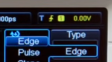
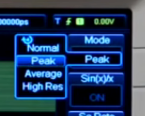

Здесь записываются основные действия, которые можно делать с оциллографом Rigol
Остановка осциллограммы (мгновенный снимок сигнала)
Настройка режима срабатывания триггера измерения (синхронизация измерений)
В правом верхнем углу отображается текущий режим триггера. На картинке ниже видна иконка срабатывания триггера по фронту сигнала и порог срабатывания 0В.

Если необходимо эти параметры изменить то в в самой правой секции панели управления (секция TRIGGER) надо нажать кнопку MENU. Будут доступны следующие настройки:
Как изменить порог срабатывания, значение которого написано в самом правом верхнем углу желтым цветом? Это делается просто вращением ручки LEVEL в секции панели управления TRIGGER. Никаких режимов настройки выбирать не нужно.
Как ловить единичные сигналы
Бывает, что нужно поймать какой-нибудь единичный сигнал, который испускается неравномерно. Например в каком-либо устройстве при нажатии кнопка Сброс по какой-либо линии испускается короткий сигнал. Надо его увидеть и определить его длинну. Как это сделать?

Если все сделано правильно, кнопка RUN/STOP загорится красным цветом. Это свидетельствует о том, что осциллограф находится в режиме "остановки", то есть он остановился и показывает замеренный сигнал.
Выйти из режима "остановки" можно кнопкой RUN/STOP. При ее нажатии цвет этой кнопки сменится с красного на зеленый, и осциллограф перейдет в обычный режим измерений.
Перед проведением замера сигнала рекомендуется выставить осциллограф так, чтобы он мог показать единичный сигнал на экране. То есть, вертикальную развертку надо выставить из предположения уровня сигнала, горизонтальную развертку из предположения длительности сигнала. Если, например, выставить горизонтальную развертку на короткий временной промежуток, а сигнал окажется длиннее, то увидеть задний фронт сигнала не получится. Осциллограф "фиксирует" только то, что есть на экране.
Если же нужно разобраться с сигналом или последовательностью импульсов на длительном промежутке времени, надо воспользоваться режимами записи измерений.